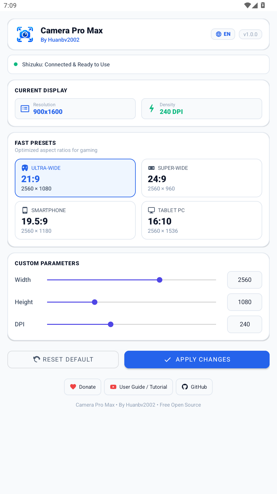

Tùy chỉnh tỉ lệ 21:9 Ultra-Wide, 24:9 Super-Wide và mật độ điểm ảnh (DPI) linh hoạt chỉ với một cú chạm. Tối ưu hóa góc nhìn toàn cảnh cho game MOBA, Tốc Chiến, Liên Quân, PUBG mà không cần Root máy.

Tích hợp sẵn 4 tỉ lệ thiết kế chuyên biệt cho từng thể loại game và thiết bị.
Mở rộng tầm nhìn ngang cực đại, giúp phát hiện đối thủ sớm hơn trong MOBA và game bắn súng.
Góc nhìn siêu toàn cảnh ngang cho các máy tính bảng màn hình lớn (Lenovo, Xiaomi, Samsung).
Tỉ lệ chuẩn của các dòng điện thoại thông minh hiện đại, tạo cảm giác cầm nắm và tương tác quen thuộc.
Tỉ lệ chuẩn của màn hình máy tính bảng, hiển thị sắc nét và tối ưu đọc sách, làm việc đa nhiệm.
Sử dụng trực tiếp Shizuku API để thực thi lệnh ADB shell an toàn, không làm mất bảo hành hay ảnh hưởng đến bảo mật máy.
Hỗ trợ cả thanh kéo Slider trực quan và hộp nhập số trực tiếp, giúp bạn căn chỉnh chính xác từng pixel chiều rộng, chiều cao và DPI.
Nút Khôi Phục Gốc luôn sẵn sàng để đưa màn hình trở về độ phân giải mặc định của nhà sản xuất ngay tức thì sau khi chơi game xong.
Tích hợp sẵn In-App Update Dialog kết nối GitHub Releases, thông báo khi có phiên bản mới với lựa chọn Cập nhật ngay hoặc Để sau.
Chuyển đổi ngôn ngữ tức thì chỉ với một nút bấm ở thanh tiêu đề, tự động lưu lại tùy chọn cho các lần sử dụng sau.
Ứng dụng hoàn toàn phi lợi nhuận, không quảng cáo rác, không thu thập dữ liệu người dùng, mã nguồn mở công khai trên GitHub.
Chỉ cần thực hiện một lần duy nhất qua Wi-Fi hoặc máy tính.
Tải ứng dụng Shizuku miễn phí trên Google Play Store hoặc GitHub Releases của Rikka.
Vào Cài đặt > Tùy chọn nhà phát triển > Bật Gỡ lỗi không dây. Kết nối cùng mạng Wi-Fi để ghép nối với Shizuku.
Khởi chạy Camera Pro Max, hộp thoại hỏi cấp quyền Shizuku sẽ hiện lên, bạn chỉ cần nhấn "Cho phép" là sẵn sàng sử dụng!
Tải xuống file APK miễn phí và bắt đầu mở rộng góc nhìn màn hình ngay hôm nay.